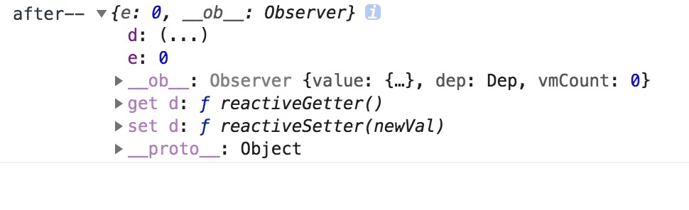
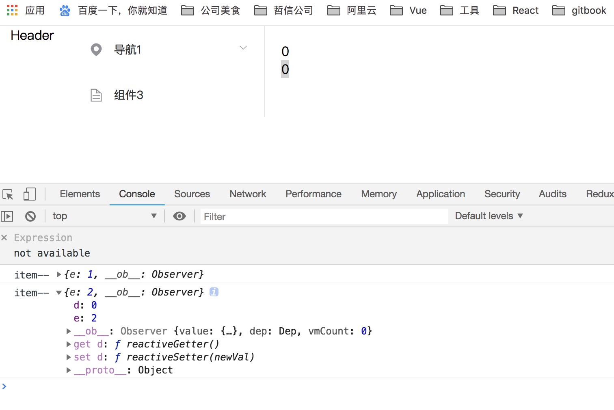
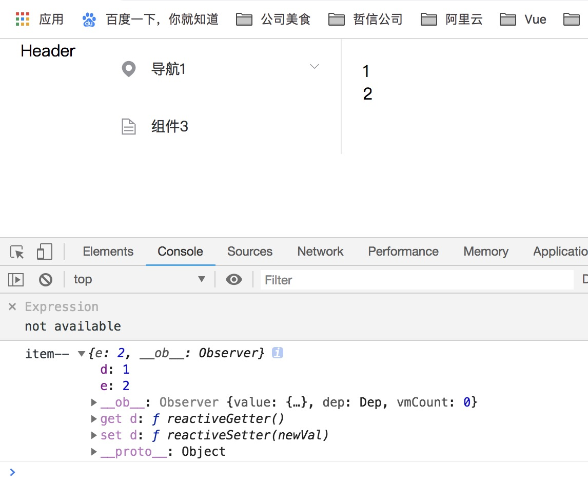

Vue给对象新增属性（使用Vue.$set()）
在开发过程中，我们时常会遇到这样一种情况，当Vue的data 里边声明或者已经赋值过的对象 或者数组(数组里面的值是对象)时候，向对象中添加新的属性，如果更新此属性的值，是不会更新视图的
根据官方文档定义:
如果在实例创建之后添加新的属性到实例上，它不会触发视图更新
受现代JS的限制(以及废弃Object.observe),由于Vue会在初始化实例时候对属性执行getter/setter转化过程，
所以属性必须在data对象上存在才能让Vue转换它，这样它才是响应的
看以下实例
<template>
<div class="test-container">
<div @click='addd(obj)'>{{obj.d}}</div>
<div @click='adde(obj)'>{{obj.e}}</div>
</div>
</template>
<script>
export default {
name: 'TestOne',
data() {
return {
obj:{}
}
},
mounted(){
this.obj = { d:0 }
this.obj.e = 0
console.log('after--',this.obj)
},
methods:{
addd(item) {
item.d = item.d + 1
console.log('item--',item)
},
adde(item) {
item.e = item.e + 1
console.log('item--',item)
}
}
}
</script>

可以看出d属性是有 get和set方法的，而新增的e属性是没有的。
点击触发2此adde, 页面效果以及控制台输出如下

我们发现，更新属性e, 是不会更新视图，但是会改变其值
店家触发1次addd,页面效果以及控制台输出如下

我们发现，更新属性d, 更新视图，同时将新增的属性e的值也更新到视图里面
解决方案，我们的 $set 可以登场了
- Vue 不允许在已经创建的实例上动态添加新的根级响应式属性 (root-level reactive property)。
然而它可以使用
Vue.set(object, key, value)方法将响应属性添加到嵌套的对象上
- 有时你想向已有对象上添加一些属性，例如使用
Object.assign()或_.extend()方法来添加属性。 但是，添加到对象上的新属性不会触发更新。在这种情况下可以创建一个新的对象，让它包含原对象的属性和新的属性
// 代替 Object.assign(this.obj, { a: 1, e: 2 })
this.obj= Object.assign({}, this.obj, { a: 1, e: 2 })
- 如果想向数组中更新一些内容，可以这样
data:{
arr1 = ['a','b','c']
}
vm.$set(arr1,2,'d')
顺便说说 vue.delete(target,key) 吧
参数
{Object| Array} target{string|number} key/index
用法
删除对象的属性。如果对象是响应式的，确保删除能触发更新视图。 这个方法主要用于避开 Vue 不能检测到属性被删除的限制， 但是你应该很少会使用它。